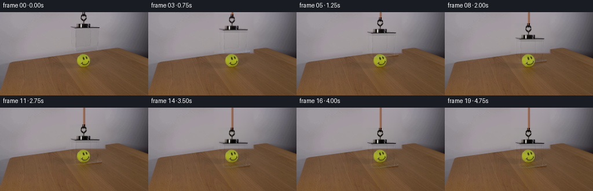
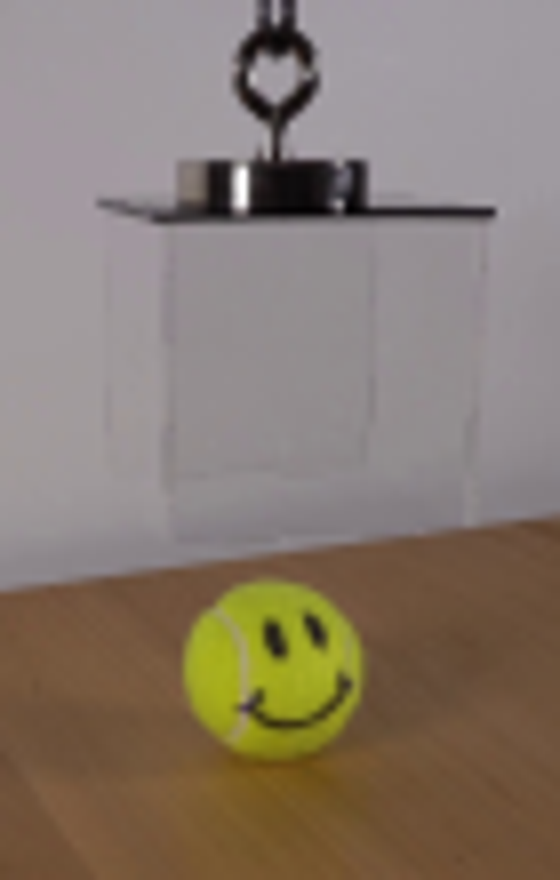
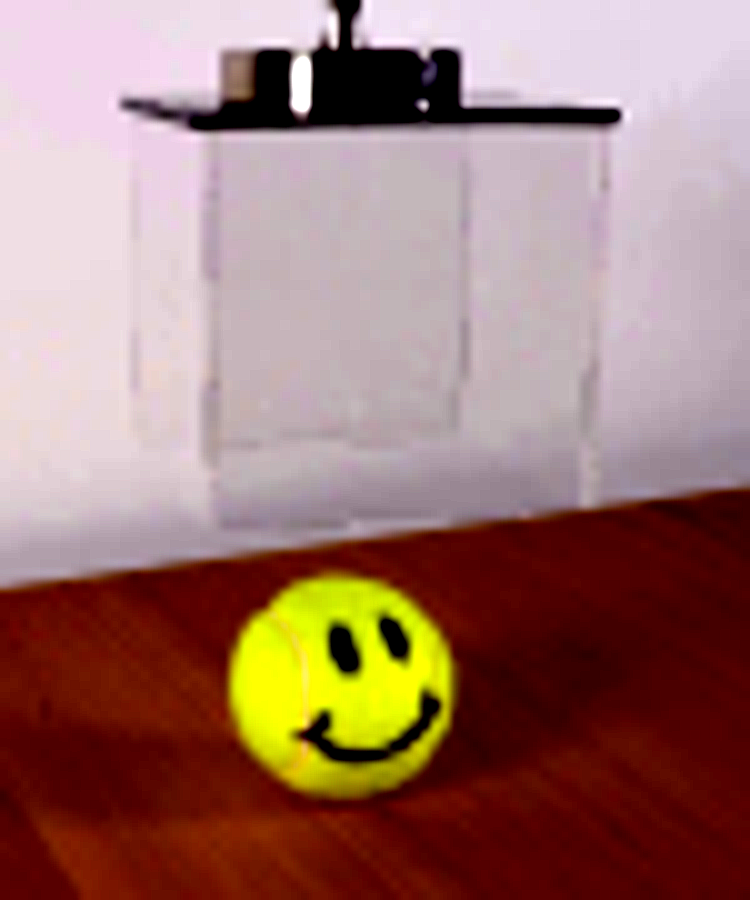
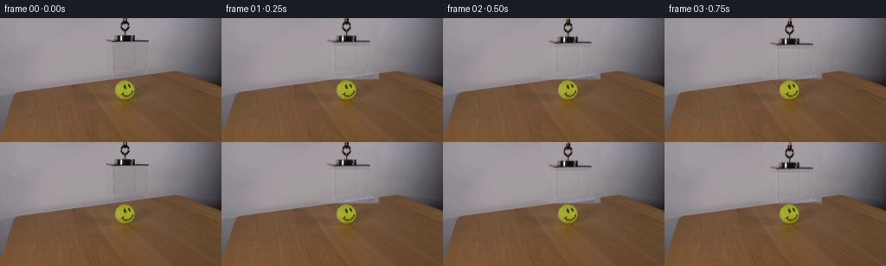
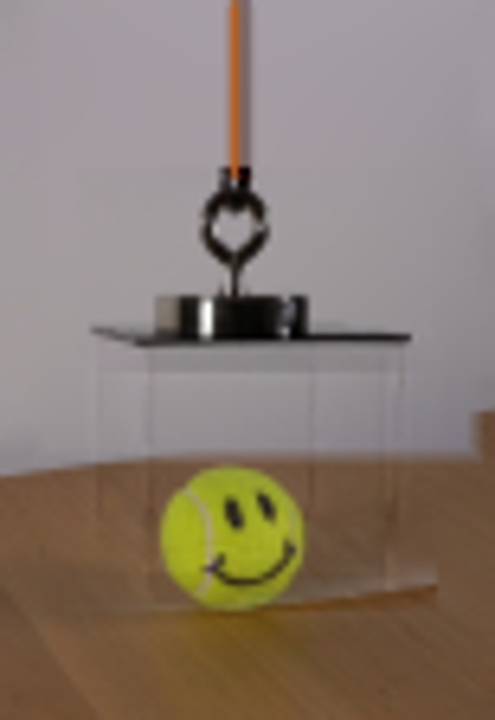
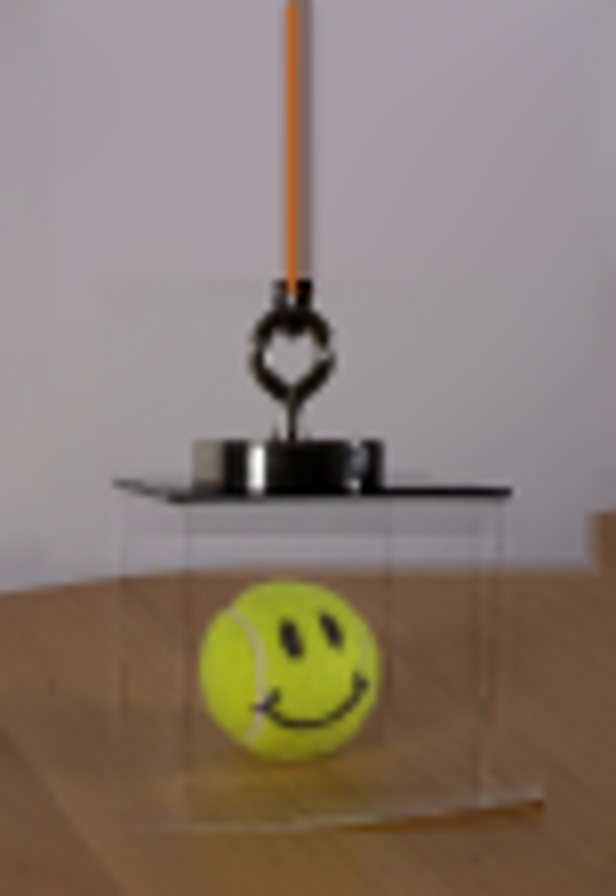

CODING AGENTS AS PIXEL WORLD MODELS
traex/GPT-5.6-Sol · 0097
点击播放 · 原生 RGB 像素
逐轮保存的候选
回放视频、检查图与代码变化。
每份候选均可单独播放。实际图片检查记录在下方工具轨迹中。
候选 01播放与检查图
点击播放 · 原生 RGB 像素

展开代码变化
--- 上一保存版本
+++ 本次保存版本
@@ -0,0 +1,193 @@
+from pathlib import Path
+import numpy as np
+import cv2
+from PIL import Image
+import artifact_io
+
+CASE_DIR = Path(__file__).resolve().parent
+W, H = 256, 144
+
+
+def wall_model(image):
+ """Fit the smooth, out-of-focus wall so the vacated area can be restored."""
+ yy, xx = np.mgrid[0:H, 0:W]
+ # Approximate wall/table boundary, with a conservative two-pixel margin.
+ horizon = 89.0 - 0.134 * xx
+ valid = (yy < horizon - 2.5) & (xx > 45) & (xx < 220)
+ # Exclude the complete hanging apparatus and a margin around it.
+ valid &= ~((xx >= 113) & (xx <= 181) & (yy <= 70))
+ # Also omit the extreme upper corners, where vignette behavior differs.
+ valid &= (yy <= 76)
+ x = (xx[valid] - 145.0) / 100.0
+ y = (yy[valid] - 36.0) / 60.0
+ A = np.column_stack([
+ np.ones_like(x), x, y, x*x, x*y, y*y,
+ x*x*x, x*x*y, x*y*y, y*y*y,
+ ])
+ X = (xx - 145.0) / 100.0
+ Y = (yy - 36.0) / 60.0
+ B = np.stack([
+ np.ones_like(X), X, Y, X*X, X*Y, Y*Y,
+ X*X*X, X*X*Y, X*Y*Y, Y*Y*Y,
+ ], axis=-1)
+ out = np.zeros_like(image, dtype=np.float32)
+ for c in range(3):
+ coef, *_ = np.linalg.lstsq(A, image[..., c][valid].astype(np.float64), rcond=None)
+ out[..., c] = B @ coef
+ return np.clip(out, 0, 255)
+
+
+def soft_rectangle_mask(x0, y0, x1, y1, feather=2.0):
+ yy, xx = np.mgrid[0:H, 0:W]
+ # Signed distance to the inside of a rectangle; feather only at free edges.
+ inside = np.minimum.reduce([xx-x0, x1-xx, yy-y0, y1-yy]).astype(np.float32)
+ return np.clip((inside + feather) / feather, 0.0, 1.0)
+
+
+def shift_field(field, dx, dy):
+ M = np.float32([[1, 0, dx], [0, 1, dy]])
+ return cv2.warpAffine(field, M, (W, H), flags=cv2.INTER_LINEAR,
+ borderMode=cv2.BORDER_CONSTANT, borderValue=0)
+
+
+def gaussian_shadow(frame, strength):
+ yy, xx = np.mgrid[0:H, 0:W].astype(np.float32)
+ # Broad, weak shadow on the tabletop beneath the descending lid and walls.
+ g1 = np.exp(-0.5 * (((xx-148.0)/25.0)**2 + ((yy-99.0)/6.2)**2))
+ # A faint right-hand contact/edge shadow grounds the clear enclosure.
+ g2 = np.exp(-0.5 * (((xx-169.0)/7.0)**2 + ((yy-99.0)/9.0)**2))
+ amount = strength * (0.060*g1 + 0.025*g2)
+ return frame * (1.0 - amount[..., None])
+
+
+def add_aa_line(frame, p1, p2, delta, width=1):
+ mask = np.zeros((H, W), np.uint8)
+ cv2.line(mask, (int(round(p1[0])), int(round(p1[1]))),
+ (int(round(p2[0])), int(round(p2[1]))), 255,
+ width, lineType=cv2.LINE_AA)
+ a = mask.astype(np.float32) / 255.0
+ frame += a[..., None] * np.asarray(delta, np.float32)
+
+
+def add_cord(frame, drop):
+ if drop <= 0.15:
+ return
+ end = max(1, int(round(drop + 1.0)))
+ # Dark edge, warm orange core and tiny highlight. The extracted metal hook
+ # is laid over this, making the join naturally disappear into the fitting.
+ add_aa_line(frame, (145, -1), (145, end), (-42, -52, -56), 2)
+ mask = np.zeros((H, W), np.uint8)
+ cv2.line(mask, (144, -1), (144, end), 255, 1, lineType=cv2.LINE_AA)
+ a = mask.astype(np.float32) / 255.0
+ orange = np.array([178.0, 91.0, 31.0], np.float32)
+ frame[:] = frame * (1-a[..., None]) + orange * a[..., None]
+ # A restrained warm specular thread on the lit left side.
+ if end > 4:
+ frame[0:end, 144, :] = np.clip(frame[0:end, 144, :] + np.array([8, 4, 0]), 0, 255)
+
+
+def add_clear_acrylic(frame, drop, progress):
+ """Very subtle refraction and edge glints, including over the ball."""
+ if progress <= 0:
+ return
+ d = drop
+ # Front panel is almost invisible, but slightly cools/desaturates objects
+ # seen through it. Use a soft inset so no artificial rectangular fill shows.
+ y0, y1 = int(round(30+d)), int(round(63+d))
+ x0, x1 = 131, 167
+ if y1 > y0:
+ panel = np.zeros((H, W), np.float32)
+ cv2.rectangle(panel, (x0, y0), (x1, y1), 1.0, -1)
+ panel = cv2.GaussianBlur(panel, (0, 0), 1.1)
+ a = panel[..., None] * (0.018 * progress)
+ tint = np.array([166.0, 171.0, 174.0], np.float32)
+ frame[:] = frame * (1-a) + tint * a
+
+ # Paired dark/light edge response makes the transparent walls readable on
+ # both the gray wall and the grainy wooden table.
+ q = 0.35 + 0.65*progress
+ add_aa_line(frame, (129, 29+d), (129, 62+d), (-4.5*q, -4.2*q, -4.0*q), 1)
+ add_aa_line(frame, (130, 29+d), (130, 63+d), (5.7*q, 5.8*q, 6.0*q), 1)
+ add_aa_line(frame, (167, 29+d), (167, 63+d), (-5.0*q, -4.8*q, -4.5*q), 1)
+ add_aa_line(frame, (168, 29+d), (168, 62+d), (4.6*q, 4.8*q, 5.2*q), 1)
+ add_aa_line(frame, (122, 28+d), (122, 56+d), (3.1*q, 3.4*q, 3.8*q), 1)
+ add_aa_line(frame, (172, 28+d), (172, 56+d), (-3.0*q, -2.8*q, -2.6*q), 1)
+ add_aa_line(frame, (130, 63+d), (168, 63+d), (-2.8*q, -2.7*q, -2.5*q), 1)
+ add_aa_line(frame, (131, 62+d), (167, 62+d), (3.0*q, 3.2*q, 3.4*q), 1)
+
+
+def make_frames():
+ original = np.asarray(Image.open(CASE_DIR / 'first_frame.png').convert('RGB'), dtype=np.uint8)
+ src = original.astype(np.float32)
+ model = wall_model(src)
+
+ # Smooth clean plate of the wall. Only the region originally occupied by the
+ # apparatus is replaced. Feathered sides prevent a visible retouch boundary.
+ clean = src.copy()
+ replace = soft_rectangle_mask(115, -3, 180, 69, feather=3.0)
+ # Keep the lower edge away from the actual wood/wall boundary.
+ clean = clean*(1-replace[..., None]) + model*replace[..., None]
+
+ # Residual representation transports lighting/reflections instead of a wall-
+ # colored rectangular sprite. This is particularly important for clear acrylic.
+ raw_residual = src - model
+ yy, xx = np.mgrid[0:H, 0:W]
+ support = ((xx >= 118) & (xx <= 177) & (yy <= 68)).astype(np.float32)
+ magnitude = np.max(np.abs(raw_residual), axis=2)
+
+ # Opaque fitting/hook/lid: confidently retain its complete appearance.
+ opaque_zone = ((xx >= 120) & (xx <= 174) & (yy <= 31))
+ opaque_weight = np.clip((magnitude-1.0)/5.0, 0, 1)
+ opaque_weight = cv2.GaussianBlur(opaque_weight.astype(np.float32), (0, 0), 0.55)
+
+ # Clear box: preserve even faint optical edges, while rejecting smooth model error.
+ highpass = raw_residual - cv2.GaussianBlur(raw_residual, (0, 0), 2.8)
+ clear_zone = ((xx >= 120) & (xx <= 175) & (yy >= 25) & (yy <= 68))
+ clear_mag = np.max(np.abs(highpass), axis=2)
+ clear_weight = np.clip((clear_mag-0.25)/2.0, 0, 1)
+ clear_weight = cv2.GaussianBlur(clear_weight.astype(np.float32), (0, 0), 0.45)
+
+ residual = np.zeros_like(src, np.float32)
+ residual += raw_residual * (opaque_weight * opaque_zone * support)[..., None]
+ # Where zones overlap, use opaque residual only once.
+ clear_only = clear_zone & (~opaque_zone)
+ residual += highpass * (clear_weight * clear_only * support)[..., None]
+
+ # Discrete samples of a smooth ease-in/ease-out descent. It starts at once,
+ # reaches the tabletop naturally, then rests for the final second.
+ drops = []
+ for i in range(20):
+ if i == 0:
+ drops.append(0.0)
+ elif i <= 15:
+ t = i / 15.0
+ ease = t*t*(3.0-2.0*t)
+ drops.append(35.0*ease)
+ else:
+ drops.append(35.0)
+
+ frames = []
+ for i, d in enumerate(drops):
+ if i == 0:
+ frames.append(original.copy())
+ continue
+ p = min(1.0, d/35.0)
+ frame = clean.copy()
+ frame = gaussian_shadow(frame, p)
+ add_cord(frame, d)
+ moved = shift_field(residual, 0.0, d)
+ frame += moved
+ add_clear_acrylic(frame, d, p)
+ frame = np.clip(np.rint(frame), 0, 255).astype(np.uint8)
+ frames.append(frame)
+
+ frames = np.stack(frames, axis=0)
+ # Contract checks, including exact preservation of the supplied opening frame.
+ assert frames.shape == (20, 144, 256, 3)
+ assert frames.dtype == np.uint8
+ assert np.array_equal(frames[0], original)
+ return frames
+
+
+if __name__ == '__main__':
+ artifact_io.save(make_frames(), CASE_DIR)
可观测工具轨迹
实际执行的命令与返回图片。
命令 1exit 0
/bin/bash -lc 'cat GENERATION_RULES.md'
命令 2exit 0
/bin/bash -lc "cat prompt.txt && printf '\\n---FILES---\\n' && find . -maxdepth 2 -type f -printf '%p\\n' | sort"
命令 3exit 0
/bin/bash -lc "python3 - <<'PY'
from PIL import Image
im=Image.open('first_frame.png')
print(im.size, im.mode)
PY
ffmpeg -version | head -n 3"命令 4exit 0
/bin/bash -lc "sed -n '1,240p' artifact_io.py && python3 - <<'PY' mods=['PIL','numpy','cv2','imageio'] for m in mods: try: x=__import__(m); print(m,'ok',getattr(x,'__version__','')) except Exception as e: print(m,'NO',e) PY"
命令 5exit 0
/bin/bash -lc "python3 - <<'PY'
from PIL import Image
im=Image.open('first_frame.png')
im.crop((110,0,180,110)).resize((560,880)).save('.tmp/crop.png')
PY"命令 6exit 0
/bin/bash -lc "python3 - <<'PY'
import cv2, numpy as np
im=cv2.imread('first_frame.png')
g=cv2.cvtColor(im,cv2.COLOR_BGR2GRAY)
# print strongest gradients in ROI after mild smooth
for y in range(20,70):
row=[]
for x in range(112,180):
gx=abs(int(g[y,x+1])-int(g[y,x-1])); gy=abs(int(g[y+1,x])-int(g[y-1,x])); v=gx+gy
if v>=12: row.append((x,v,int(g[y,x])))
if row: print(y,row[:30])
PY"命令 7exit 0
/bin/bash -lc "python3 - <<'PY'
from PIL import Image,ImageEnhance,ImageFilter
im=Image.open('first_frame.png').crop((110,15,185,105)).resize((750,900))
im=ImageEnhance.Contrast(im).enhance(3)
im=ImageEnhance.Sharpness(im).enhance(2)
im.save('.tmp/enhance.png')
PY"命令 8exit 0
/bin/bash -lc "cat > generate.py <<'PY'
from pathlib import Path
import numpy as np
import cv2
from PIL import Image
import artifact_io
CASE_DIR = Path(__file__).resolve().parent
W, H = 256, 144
def wall_model(image):
\"\"\"Fit the smooth, out-of-focus wall so the vacated area can be restored.\"\"\"
yy, xx = np.mgrid[0:H, 0:W]
# Approximate wall/table boundary, with a conservative two-pixel margin.
horizon = 89.0 - 0.134 * xx
valid = (yy < horizon - 2.5) & (xx > 45) & (xx < 220)
# Exclude the complete hanging apparatus and a margin around it.
valid &= ~((xx >= 113) & (xx <= 181) & (yy <= 70))
# Also omit the extreme upper corners, where vignette behavior differs.
valid &= (yy <= 76)
x = (xx[valid] - 145.0) / 100.0
y = (yy[valid] - 36.0) / 60.0
A = np.column_stack([
np.ones_like(x), x, y, x*x, x*y, y*y,
x*x*x, x*x*y, x*y*y, y*y*y,
])
X = (xx - 145.0) / 100.0
Y = (yy - 36.0) / 60.0
B = np.stack([
np.ones_like(X), X, Y, X*X, X*Y, Y*Y,
X*X*X, X*X*Y, X*Y*Y, Y*Y*Y,
], axis=-1)
out = np.zeros_like(image, dtype=np.float32)
for c in range(3):
coef, *_ = np.linalg.lstsq(A, image[..., c][valid].astype(np.float64), rcond=None)
out[..., c] = B @ coef
return np.clip(out, 0, 255)
def soft_rectangle_mask(x0, y0, x1, y1, feather=2.0):
yy, xx = np.mgrid[0:H, 0:W]
# Signed distance to the inside of a rectangle; feather only at free edges.
inside = np.minimum.reduce([xx-x0, x1-xx, yy-y0, y1-yy]).astype(np.float32)
return np.clip((inside + feather) / feather, 0.0, 1.0)
def shift_field(field, dx, dy):
M = np.float32([[1, 0, dx], [0, 1, dy]])
return cv2.warpAffine(field, M, (W, H), flags=cv2.INTER_LINEAR,
borderMode=cv2.BORDER_CONSTANT, borderValue=0)
def gaussian_shadow(frame, strength):
yy, xx = np.mgrid[0:H, 0:W].astype(np.float32)
# Broad, weak shadow on the tabletop beneath the descending lid and walls.
g1 = np.exp(-0.5 * (((xx-148.0)/25.0)**2 + ((yy-99.0)/6.2)**2))
# A faint right-hand contact/edge shadow grounds the clear enclosure.
g2 = np.exp(-0.5 * (((xx-169.0)/7.0)**2 + ((yy-99.0)/9.0)**2))
amount = strength * (0.060*g1 + 0.025*g2)
return frame * (1.0 - amount[..., None])
def add_aa_line(frame, p1, p2, delta, width=1):
mask = np.zeros((H, W), np.uint8)
cv2.line(mask, (int(round(p1[0])), int(round(p1[1]))),
(int(round(p2[0])), int(round(p2[1]))), 255,
width, lineType=cv2.LINE_AA)
a = mask.astype(np.float32) / 255.0
frame += a[..., None] * np.asarray(delta, np.float32)
def add_cord(frame, drop):
if drop <= 0.15:
return
end = max(1, int(round(drop + 1.0)))
# Dark edge, warm orange core and tiny highlight. The extracted metal hook
# is laid over this, making the join naturally disappear into the fitting.
add_aa_line(frame, (145, -1), (145, end), (-42, -52, -56), 2)
mask = np.zeros((H, W), np.uint8)
cv2.line(mask, (144, -1), (144, end), 255, 1, lineType=cv2.LINE_AA)
a = mask.astype(np.float32) / 255.0
orange = np.array([178.0, 91.0, 31.0], np.float32)
frame[:] = frame * (1-a[..., None]) + orange * a[..., None]
# A restrained warm specular thread on the lit left side.
if end > 4:
frame[0:end, 144, :] = np.clip(frame[0:end, 144, :] + np.array([8, 4, 0]), 0, 255)
def add_clear_acrylic(frame, drop, progress):
\"\"\"Very subtle refraction and edge glints, including over the ball.\"\"\"
if progress <= 0:
return
d = drop
# Front panel is almost invisible, but slightly cools/desaturates objects
# seen through it. Use a soft inset so no artificial rectangular fill shows.
y0, y1 = int(round(30+d)), int(round(63+d))
x0, x1 = 131, 167
if y1 > y0:
panel = np.zeros((H, W), np.float32)
cv2.rectangle(panel, (x0, y0), (x1, y1), 1.0, -1)
panel = cv2.GaussianBlur(panel, (0, 0), 1.1)
a = panel[..., None] * (0.018 * progress)
tint = np.array([166.0, 171.0, 174.0], np.float32)
frame[:] = frame * (1-a) + tint * a
# Paired dark/light edge response makes the transparent walls readable on
# both the gray wall and the grainy wooden table.
q = 0.35 + 0.65*progress
add_aa_line(frame, (129, 29+d), (129, 62+d), (-4.5*q, -4.2*q, -4.0*q), 1)
add_aa_line(frame, (130, 29+d), (130, 63+d), (5.7*q, 5.8*q, 6.0*q), 1)
add_aa_line(frame, (167, 29+d), (167, 63+d), (-5.0*q, -4.8*q, -4.5*q), 1)
add_aa_line(frame, (168, 29+d), (168, 62+d), (4.6*q, 4.8*q, 5.2*q), 1)
add_aa_line(frame, (122, 28+d), (122, 56+d), (3.1*q, 3.4*q, 3.8*q), 1)
add_aa_line(frame, (172, 28+d), (172, 56+d), (-3.0*q, -2.8*q, -2.6*q), 1)
add_aa_line(frame, (130, 63+d), (168, 63+d), (-2.8*q, -2.7*q, -2.5*q), 1)
add_aa_line(frame, (131, 62+d), (167, 62+d), (3.0*q, 3.2*q, 3.4*q), 1)
def make_frames():
original = np.asarray(Image.open(CASE_DIR / 'first_frame.png').convert('RGB'), dtype=np.uint8)
src = original.astype(np.float32)
model = wall_model(src)
# Smooth clean plate of the wall. Only the region originally occupied by the
# apparatus is replaced. Feathered sides prevent a visible retouch boundary.
clean = src.copy()
replace = soft_rectangle_mask(115, -3, 180, 69, feather=3.0)
# Keep the lower edge away from the actual wood/wall boundary.
clean = clean*(1-replace[..., None]) + model*replace[..., None]
# Residual representation transports lighting/reflections instead of a wall-
# colored rectangular sprite. This is particularly important for clear acrylic.
raw_residual = src - model
yy, xx = np.mgrid[0:H, 0:W]
support = ((xx >= 118) & (xx <= 177) & (yy <= 68)).astype(np.float32)
magnitude = np.max(np.abs(raw_residual), axis=2)
# Opaque fitting/hook/lid: confidently retain its complete appearance.
opaque_zone = ((xx >= 120) & (xx <= 174) & (yy <= 31))
opaque_weight = np.clip((magnitude-1.0)/5.0, 0, 1)
opaque_weight = cv2.GaussianBlur(opaque_weight.astype(np.float32), (0, 0), 0.55)
# Clear box: preserve even faint optical edges, while rejecting smooth model error.
highpass = raw_residual - cv2.GaussianBlur(raw_residual, (0, 0), 2.8)
clear_zone = ((xx >= 120) & (xx <= 175) & (yy >= 25) & (yy <= 68))
clear_mag = np.max(np.abs(highpass), axis=2)
clear_weight = np.clip((clear_mag-0.25)/2.0, 0, 1)
clear_weight = cv2.GaussianBlur(clear_weight.astype(np.float32), (0, 0), 0.45)
residual = np.zeros_like(src, np.float32)
residual += raw_residual * (opaque_weight * opaque_zone * support)[..., None]
# Where zones overlap, use opaque residual only once.
clear_only = clear_zone & (~opaque_zone)
residual += highpass * (clear_weight * clear_only * support)[..., None]
# Discrete samples of a smooth ease-in/ease-out descent. It starts at once,
# reaches the tabletop naturally, then rests for the final second.
drops = []
for i in range(20):
if i == 0:
drops.append(0.0)
elif i <= 15:
t = i / 15.0
ease = t*t*(3.0-2.0*t)
drops.append(35.0*ease)
else:
drops.append(35.0)
frames = []
for i, d in enumerate(drops):
if i == 0:
frames.append(original.copy())
continue
p = min(1.0, d/35.0)
frame = clean.copy()
frame = gaussian_shadow(frame, p)
add_cord(frame, d)
moved = shift_field(residual, 0.0, d)
frame += moved
add_clear_acrylic(frame, d, p)
frame = np.clip(np.rint(frame), 0, 255).astype(np.uint8)
frames.append(frame)
frames = np.stack(frames, axis=0)
# Contract checks, including exact preservation of the supplied opening frame.
assert frames.shape == (20, 144, 256, 3)
assert frames.dtype == np.uint8
assert np.array_equal(frames[0], original)
return frames
if __name__ == '__main__':
artifact_io.save(make_frames(), CASE_DIR)
PY
python3 generate.py
python3 - <<'PY'
import numpy as np
from PIL import Image
x=np.load('pixels.npz')['pixels']
print('pixels',x.shape,x.dtype)
a=np.array(Image.open('first_frame.png'))
b=np.array(Image.open('frames/00.png'))
print('first exact',np.array_equal(a,b),'maxdiff',np.abs(a.astype(int)-b.astype(int)).max())
for i in [0,1,3,6,9,12,15,19]:
im=np.array(Image.open(f'frames/{i:02d}.png'))
print(i, int(np.sum(np.any(im"'!=a,axis=2))), im.mean(axis=(0,1)).round(2))
PY'命令 9exit 0
/bin/bash -lc "python3 - <<'PY'
from PIL import Image,ImageEnhance
for i in (0,5,10,15):
im=Image.open(f'frames/{i:02d}.png').crop((108,0,185,112)).resize((616,896))
im.save(f'.tmp/f{i}.png')
PY
python3 - <<'PY'
# objective diagnostics: stationary pixels and motion centroid in apparatus ROI
import numpy as np
from PIL import Image
ims=np.stack([np.array(Image.open(f'frames/{i:02d}.png')) for i in range(20)])
for i in range(1,20):
d=np.max(abs(ims[i].astype(int)-ims[0].astype(int)),2)
ys,xs=np.where(d>15)
print(i, 'drop-ish bounds', (xs.min(),ys.min(),xs.max(),ys.max()), 'strong',len(xs))
PY"视觉工具实际返回图片 1

视觉工具实际返回图片 2

视觉工具实际返回图片 3

视觉工具实际返回图片 4

视觉工具实际返回图片 5

视觉工具实际返回图片 6

视觉工具实际返回图片 7

保存候选 1 份；完成命令 9 次；可验证图片返回 7 张。原始 API 响应与完整日志保留在本地。